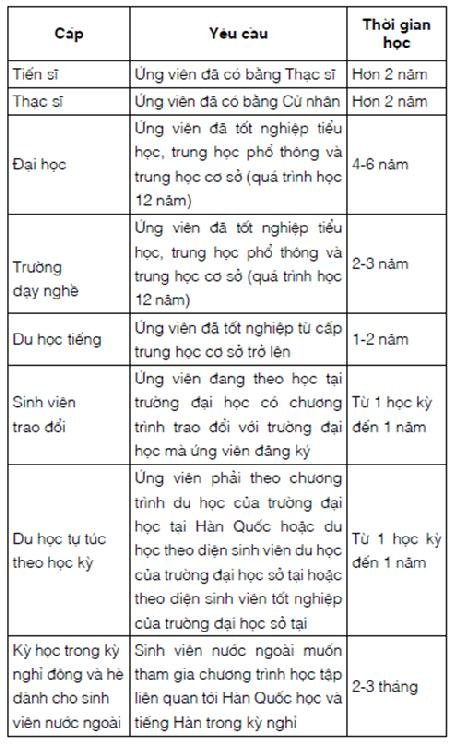

Bí Quyết 3Chọn Thời Điểm Bắt Đầu Học Ngoại Ngữ
Bạn có biết?
Từ có nhiều nghĩa nhất trong tiếng Anh là từ “set”, với 430 nghĩa được liệt kê trong ấn bản thứ hai của Từ điển Anh ngữ Oxford, xuất bản năm 1989.
Trong tiếng Hindi và Urdu, từ “कल” (kal) có nghĩa là “ngày mai” nhưng cũng đồng thời có nghĩa là “hôm qua”. Theo người Ấn Độ, thời gian là một thể liên tục đi tiếp trong các chu kỳ vô hạn. Hôm qua xác định hướng đi của ngày hôm nay và ngày mai, ngày mai sẽ xác định hướng đi cho “ngày hôm qua” trong tương lai. Vậy nên từ vẫn được giữ nguyên, chỉ biến đổi thì của động từ.
Như vậy, nếu hôm qua xác định cho hôm nay và hôm nay xác định cho ngày mai thì không có thời điểm nào tốt để học ngoại ngữ hơn là ngay bây giờ. Ngày hôm qua không thể trở lại được nữa còn học từ ngày mai sẽ mất đi một ngày học ngoại ngữ của bạn. Khi bạn chọn được ngôn ngữ để theo học và biết được mục tiêu học ngoại ngữ của bản thân là lúc bạn có thể bắt tay vào học tập.
Nhiều nghiên cứu chỉ ra rằng bắt đầu học ngoại ngữ càng sớm, chúng ta càng dễ dàng tiếp thu và trở nên thông thạo trong thời gian sớm hơn. Khả năng tiếp thu những điều mới mẻ của con người giảm dần trong khi các trách nhiệm của chúng ta thường sẽ tăng dần theo năm tháng. Trong trường hợp của tôi, tôi cùng mẹ và em trai sang Cộng hòa Séc để sinh sống vào cùng thời điểm nhưng mẹ đã học tiếng Séc vất vả hơn hai chị em rất nhiều bởi vì với công việc bận rộn hằng ngày, mẹ không có nhiều thời gian rảnh hay năng lượng sau những giờ làm việc để học ngoại ngữ.
Kết quả nghiên cứu của trường Đại học Washington, Hoa Kỳ cho thấy rằng học ngoại ngữ từ bé sẽ tăng khả năng phát âm chuẩn như người bản xứ, một điều không dễ đối với những người bắt đầu học ngoại ngữ khi đã trưởng thành. Nhận thức được điều này, các trường tiểu học ở châu Âu đã dạy ngoại ngữ cho học sinh từ rất sớm. Trong Hội nghị thượng đỉnh của Hội đồng châu Âu tại Barcelona vào năm 2002, các quốc gia thành viên đã đồng nhất kêu gọi “nâng cao khả năng nắm vững các kỹ năng cơ bản, đặc biệt bằng cách dạy ít nhất hai ngoại ngữ từ độ tuổi rất nhỏ”. Hiện nay, học sinh tại hơn 20 quốc gia thành viên Liên minh châu Âu bắt buộc phải học ngoại ngữ thứ hai ít nhất trong vòng một năm học.

Nhưng ngay cả khi bạn bắt đầu học ngoại ngữ muộn hơn thậm chí là sau khi đã ra trường, bạn cũng chớ nên nản chí! Có những người như Benny Lewis, người sáng lập trang web và là tác giả cuốn sách Fluent in 3 months, chỉ nói được một ngôn ngữ duy nhất là tiếng Anh khi tốt nghiệp đại học. Nhưng sau những năm tháng khổ luyện, hiện giờ anh đã có thể sử dụng được 10 ngôn ngữ một cách thành thạo.
Có phụ huynh phân vân không biết có nên cho con học ngoại ngữ thứ hai khi vẫn chưa thành thạo ngoại ngữ thứ nhất (đa số là tiếng Anh) hay không. Tôi khuyên họ đừng sợ cho con học nhiều ngoại ngữ. Khi nhìn lại những năm tháng học tiểu học và trung học, tôi thấy hối tiếc vì không học nhiều ngoại ngữ bởi điều này có ảnh hưởng rất lớn tới cuộc sống về sau. Nếu được quay lại quãng thời gian đó, tôi sẽ học thêm nhiều ngoại ngữ hơn nữa.
BÀI TẬP CHO BẠN